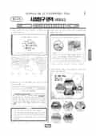

문제지

시험지 만들기준비하고 있어요. 열리면 아래 탭에서 바로 쓸 수 있어요.
전국연합학력평가 · 시·도교육청 주관
2024년 6월 고2 학력평가 사회탐구 세계지리 1등급컷은 원점수 48점(추정), 표준점수 최고점은 68점입니다.
원점수 1등급컷은 공식 발표값이 아니라 EBSi·입시기관 값입니다. 등급별 값은 등급컷 표, 출처 구분은 데이터 원칙에 있습니다.

| 등급 | 표준점수 이상 | 인원(명) | 비율 |
|---|---|---|---|
| 1 | 67 | 1,147 | 4.77% |
| 2 | 63 | 1,624 | 6.75% |
| 3 | 58 | 3,188 | 13.26% |
| 4 | 53 | 4,113 | 17.11% |
| 5 | 47 | 4,961 | 20.63% |
| 6 | 42 | 3,536 | 14.71% |
| 7 | 36 | 3,210 | 13.35% |
| 8 | 33 | 1,645 | 6.84% |
| 9 | 26 | 620 | 2.58% |
시·도교육청 공개 자료
출처: 시·도교육청이 공개한 전국연합학력평가 성적 분석·통계자료(공개 자료 보기).
EBSi 응답자 기준으로 가장 많이 틀린 문항은 15번(2점)이고, 오답률은 47.9%입니다.
| 순위 | 문항 | 배점 | 오답률 | 정답 | 많이 고른 오답 |
|---|---|---|---|---|---|
| 1 | 15번 | 2점 | 47.9% | ① | ⑤ 17.9% |
| 2 | 13번 | 3점 | 42.1% | ② | ④ 22.1% |
| 3 | 12번 | 3점 | 39.5% | ④ | ② 15.3% |
| 4 | 11번 | 2점 | 36.3% | ③ | ⑤ 21.6% |
| 5 | 18번 | 3점 | 34.2% | ① | ④ 17.4% |
| 6 | 6번 | 2점 | 33.7% | ④ | ② 17.9% |
| 7 | 7번 | 3점 | 30% | ② | ③ 11.1% |
| 8 | 3번 | 2점 | 30% | ③ | ① 11.6% |
| 9 | 5번 | 3점 | 28.4% | ⑤ | ③ 13.7% |
| 10 | 8번 | 2점 | 26.3% | ④ | ③ 15.8% |
| 11 | 16번 | 3점 | 24.7% | ③ | ⑤ 8.4% |
| 12 | 1번 | 2점 | 24.2% | ⑤ | ② 12.6% |
| 13 | 19번 | 2점 | 22.1% | ④ | ③ 14.2% |
| 14 | 17번 | 2점 | 22.1% | ⑤ | ② 11.6% |
| 15 | 20번 | 3점 | 17.9% | ② | ④ 7.4% |
EBSi 가채점 응답자 기준 · 전 문항 중 오답률 상위 15문항
출처: EBSi 역대 등급컷·오답률 공개 화면. 가채점에 참여한 EBSi 이용자 응답이라 전체 응시자 정답률과는 다를 수 있습니다.
발행 기관: 시·도교육청(전국연합학력평가). 파일 위치: 이 사이트가 보관한 사본. 저작권은 발행 기관에 있습니다. 원본과 다르거나 게시 중단이 필요하면 연락처로 알려 주세요. 등급컷 출처 구분은 데이터 원칙에서 설명합니다.
막대 색은 역대 대비 난이도 · 진한 막대가 이 시험 · 막대를 누르면 그 회차로 이동
| 회차 | 1등급컷 | 표점 최고 | 1등급 표점 | 난이도 |
|---|---|---|---|---|
| 6월 학평2024년 고2이 시험 | 48 | 68 | 67 | 쉬움 |
| 3월 학평2024년 고2 | 45 | 72 | 68 | 쉬움 |
| 9월 학평2023년 고2 | 40 | 79 | 69 | 매우 어려움 |
| 6월 학평2023년 고2 | 48 | 68 | 66 | 쉬움 |
| 3월 학평2023년 고2 | 47 | 68 | 65 | 매우 쉬움 |
| 11월 학평2022년 고2 | 45 | 71 | 67 | 보통 |
| 9월 학평2022년 고2 | 44 | 75 | 70 | 매우 어려움 |
| 6월 학평2022년 고2 | 41 | 78 | 69 | 매우 어려움 |
| 3월 학평2022년 고2 | 47 | 68 | 65 | 매우 쉬움 |
| 11월 학평2021년 고2 | 45 | 71 | 67 | 보통 |
세계지리는 교육청 채점 결과 1등급 구분 표준점수는 67점, 최고점은 68점(733명)이었습니다. 3월(1등급 68점, 최고점 72점)보다 최고점이 4점 내려갔고, EBSi 가채점 응답자 기준 오답률 50%를 넘은 문항이 없었습니다.
가장 많이 틀린 15번(2점, 47.9%)은 사진을 보고 나눈 대화 속 '이 지형'의 사진을 고르는 문항, 13번(42.1%)은 지도에 표시된 구간의 지형 단면 A~C 문항이었습니다.
15번의 모뉴먼트 밸리는 미국 남서부의 건조 지역으로, 단단한 암석층과 무른 암석층이 번갈아 쌓인 지층이 오랜 시간 침식을 받아 만들어진 탁자 모양의 메사, 그보다 더 깎여 작아진 탑 모양의 뷰트가 대표 경관입니다. 비슷한 사진으로 나오는 버섯바위(바람에 날린 모래의 침식)나 석회암 지형과 구분해야 합니다.
13번의 지형 단면은 안정육괴(오랜 침식으로 평탄), 고기 조산대(고생대 조산 운동, 완만한 산지, 석탄 많음), 신기 조산대(중생대 말~신생대, 높고 험하며 판의 경계에 위치)를 구분하는 문항이었습니다.